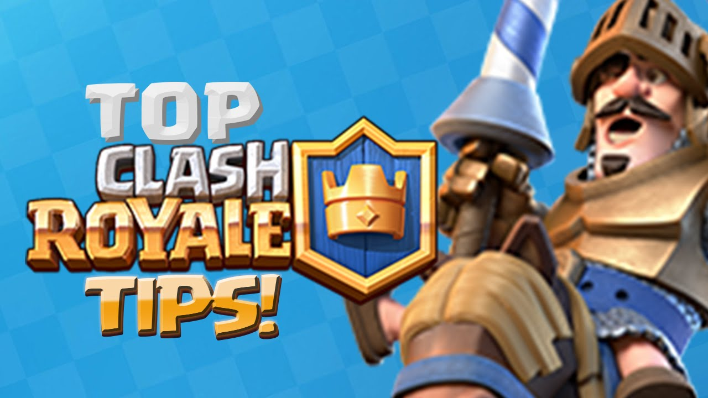

Hey guys, this is a huge collection of the top common mistakes people usually make in Clash Royale. I am definitely not the best player, but I can see people making obvious mistakes every day. That’s why I decided to post this guide to help people guys improve the gameplay!

- Don’t play a card If your opponent has the direct counter to it in his hand.
- Tracking cards is very easy: Once your opponent uses a card, he will have it after playing 4 more cards. Be wary in case your opponent can cycle through his deck quickly.
- Always count your opponent’s cards to see whether he is hiding any surprising card (usually Three Musketeers, Rocket, Lightning, Graveyard…).
- Never underestimate Epics and Legendaries in Challenges. You are probably used to the ladder, where commons and rares are overleveled a lot.
- If a card don’t solve a situation or don’t affect the battle, don’t play it!
- Know when to give up on a push. Assuming that you launch your best push towards the opponent Tower and he deploys 3 Musketeers to defend. If you can’t touch them, your push is gone. If you Zap them, the 0.5s stun does nothing and the damage is useless. In this case, it’s better to give up!
- Know when to sacrifice your Tower’s HP. For example, let that Mega Minion get 2 hits on your Tower instead of using Fire Spirits to defend, which can easily counter the opponent’s Minion Horde. Sometimes, you even have to sacrifice the entire Tower. Another example, a P.E.K.K.A 3 Musketeers is coming down to your Tower. All you have is only 3 Elixir, which is enough to place the Knight down. The Knight is totally useless against this push, your Tower will be wreaked anyway. If you waste 3 Elixir for nothing, they might get your King’s Tower too. It’s better to wait until you can play a better card.

- Emotes can change your mood while playing the game. When somebody laughs at you and you get frusterated, cool down! Good moods can improve gameplay.
- Think twice before using the card for the first time of the battle. Assuming that your opponent uses Minion Horde and you have Electro Wizard and Arrows in your hand. They both will do the job very well but try not to reveal Arrows too soon since it’s the hard counter to his Minion Horde when he needs it the most.
- Watch the shadows of the flying troops, not their bodies. While playing, you should notice that sometimes you use Fireball to kill the Minion Horde but you might miss some.
- Sometimes, getting positive Elixir trade is not the priority. You should factor in counterpush value too. For example, use Executioner instead of Arrows to counter the Minion Horde then transfer into the counterpush.
- If your pushes always get stopped, consider using spells to damage his Tower (Rocket, Fireball, Lightning). Simply go on full defensive mode and use your spells to damage the Tower repeatedly. Hold your finger on a card to see how much damage it does.
Firstly, the easiest way to earn Gold in game is opening Chests. You can get about 80 Gold from every free chest, meaning you can get about 320 Gold every day from opening Free Chest (2 in the morning and 2 before sleeping).

Donating is the other way to earn Gold in Clash Royale. Find an active Clan at here to request and donate cards easier.
Some players think it’s stupid to give the hard-earned cards away, especially Epic cards. Yes, it’s pretty hard to get them but you can get XP and 5 Gold for every donated common card, 50 Gold for every Rare and even 500 Gold for every donated Epic card. Also, you can get those donated cards back whenever you want. The Gold is not taken from the player getting cards from you. It’s just like you are selling cards but the buyers don’t have to pay.
Gems. Simple. Save them and use it on ledgendary chests or chalanges.